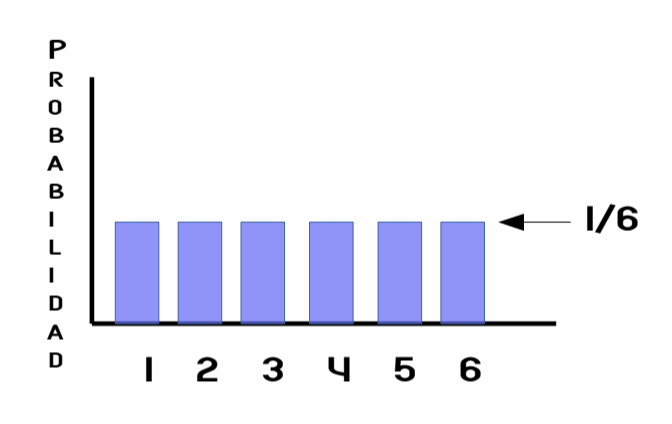
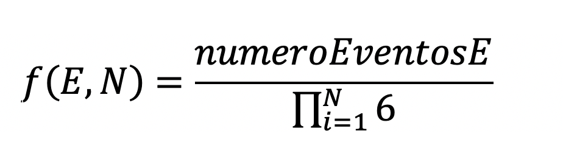

Universidad Nacional Autónoma de México

Instituto de Investigaciones en Matemáticas Aplicadas y en Sistemas
Temas Selectos de Inteligencia Artificial: Detección de Anomalías
Dr. Jose Antonio Neme Castillo
Alejandro Salinas Medina
Macroestados y microestados
Generación Macroestados y Microestados
Experimento "N" Dados
Microestado (Estados Equiprobables) de los ${n_dados} dados
Probabilidades Independientes
Probabilidad = Número de resultados deseados ÷ Número de resultados posibles
